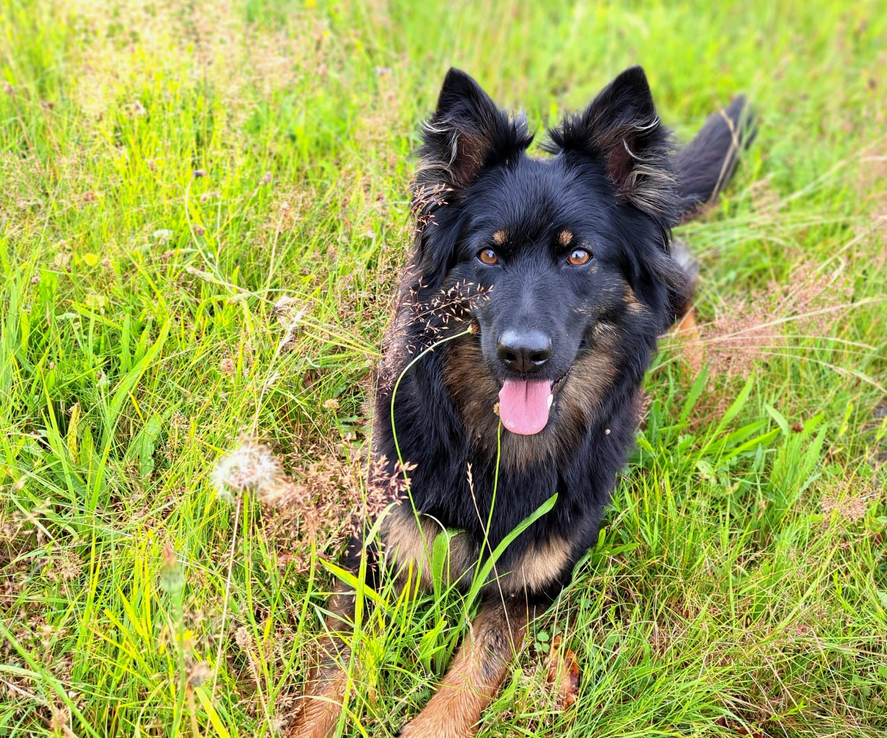

Zakladatelka naší chovatelské stanice. Oficiálním registrovaným jménem v průkazu původu je sice Čiperka z Malého údolí, ale doma a v běžném životě jí neřekneme jinak než Čikita (Čiki). Je to fenka s úžasným temperamentem, skvělou chutí do práce a nesmírně milou povahou k celé rodině.
| Datum narození: | 17.04.2023 |
| Číslo zápisu: | CMKU/CP/9416/23 |
| Zdravotní výsledky: | DKK B, DM: G/G |
| Svod & Bonitace: | Chovná fena | Svod: A2, H1, K3, W2 | Bonitační kód: A2, K3, W2 |
| Výstavy & Zkoušky: | Klubová/speciální výstava: V4 (Výborná 4) | 2025: FCI-BH/VT |